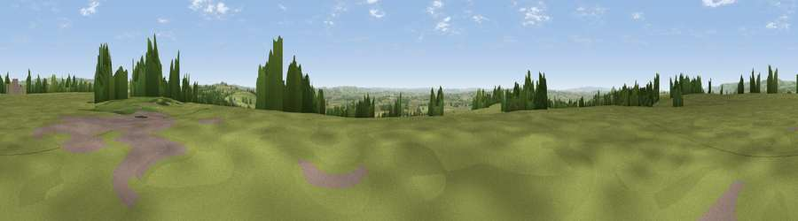

Viewpoint near East Pennard
#16279 in England · top 36% of its area beats it · near East PennardThe view, rendered

A 360° render of this exact spot computed from the terrain model, tree cover and land cover — summer colours, afternoon light, calibrated against photographs of famous viewpoints. Real trees, hedges and buildings will differ in detail.
The panorama
Grey silhouette: terrain skyline in each direction (720 bearings, Earth curvature and refraction included). Dashed green: skyline with trees (+15 m) and buildings (+8 m) as obstacles. Blue strip: how far the ground is visible on each bearing.
Where the view opens
Wedge length = distance to the farthest visible ground on that bearing (vegetation-aware). Rings at 10, 25 and 50 km.
What fills the view
77% grassland · 12% woodland · 11% cropland · 1% built-up
Angular shares of the visible panorama (visual magnitude), not map area. Landscape diversity 0.32 (0–1 Shannon).
Key numbers
More beautiful places nearby
The staircase of upgrades: each row has a higher view potential than everything closer. Driving times are estimates from straight-line distance, calibrated against real road routing — check an actual route before setting out.
| Place | Direction | Drive | Score |
|---|---|---|---|
| Viewpoint near East Pennard | WNW · 1 km | ~3 min | 56.8 |
| Viewpoint near West Pennard | WNW · 2 km | ~6 min | 57.8 |
| Viewpoint near Pylle | E · 3 km | ~8 min | 65.1 |
| Viewpoint near North Wootton | NNW · 6 km | ~13 min | 67.9 |
| Glastonbury Tor | W · 7 km | ~14 min | 75.8 |
| Viewpoint near Lamyatt | ESE · 9 km | ~17 min | 77.8 |
| Beacon Batch | NNW · 22 km | ~36 min | 79.4 |
| Bleadon Hill [Loxton Hill] | NW · 29 km | ~46 min | 79.6 |
51.13771, -2.59919 · source: screening · position refined by local search. Computed location — check access rights before visiting.